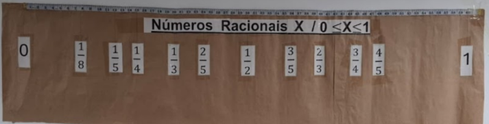

6º ao 9º Ano
Atividade 01
•
Reta Numérica
Reta Numérica Interativa (0 a 1)
Atividade prática com fita métrica e cartões para localizar, comparar e ordenar números racionais no intervalo estrito de 0 a 1.
EF06MA08
EF06MA09
EF07MA10